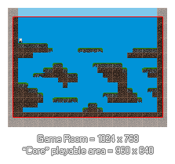

Tutorial
Page 11 of 15
Devices Part I
This page is the first of various that deal with scaling your game to fit different resolution devices from one code-base. This first part deals with single room games where you do not need to move a view around, like
that which was used on the previous page for example, and will work in more or less the same way as that example too.
Before getting started, you will need to set the Global Game Settings to lock the orientation of your game to landscape (which tab you do this on will depend on the device you are using for testing)
as the room we have for this tutorial is also in landscape mode, and you should also place the room rm_Devices_2_1 at the top of the room assets in the resource tree.
What are we going to do now is to make this room scale correctly for any width of display. The idea behind this is that you will scale the height of the room to be the same as (or a little bit less than) the height
of the display, and then extend the visible area on either side to fill in the extra width that this may leave. We have covered similar things already in this tutorial, so you should have a fair idea about how this is to
be achieved!
If you look at the room rm_Devices_2 you will see that it is 1024x768. We have choosen this resolution because it adapts well to many others with a minimum amount of cropping or adjustments. What
we are finally going to do is adjust the visible area around a "core" view of 960x640 within the room to try and maximise the screen space that our game uses and minimise the "empty" parts. This means that your
game should be designed around a 960x640 space, with no essential things happening outside of that area. If you look at our test room, you can see that the tiles have been extended to cover the areas outside
of that central space.

The benefit of this approach is that by sacrificing a tiny bit of room space you gain screen coverage, as scaling the whole room to fit the width or height of the display will leave a much larger border around the game,
which doesn't look good.
NOTE: The techniques shown here can be applied to "hi res" games too, simply by scaling up the resolutions used (basically double the sizes mentioned in the tutorial). However if you are seriously
considering natively supporting a display like the iPad Retina display (2048px x 1536px) you should really think about creating two sets of game assets and making your game switch between them or even have
two versions of your game (many popular titles do this).
Click on the Next button to go to the next page of the tutorial.